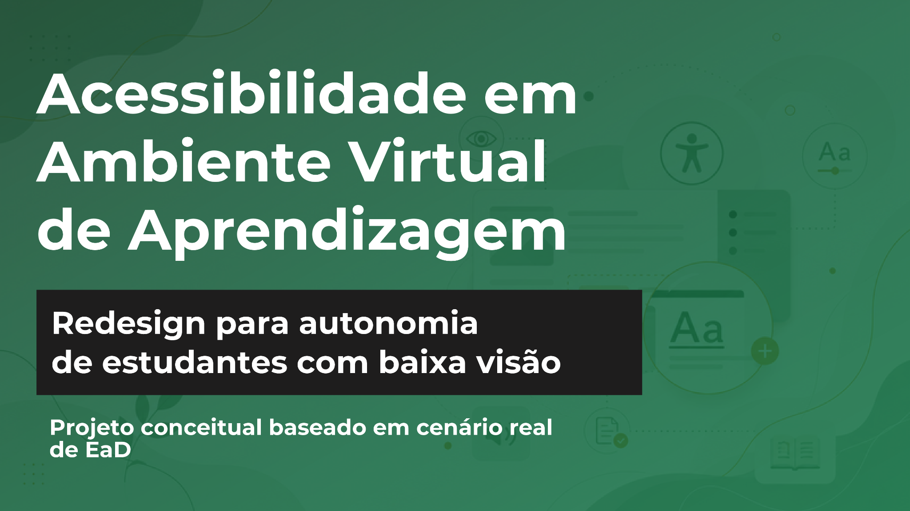
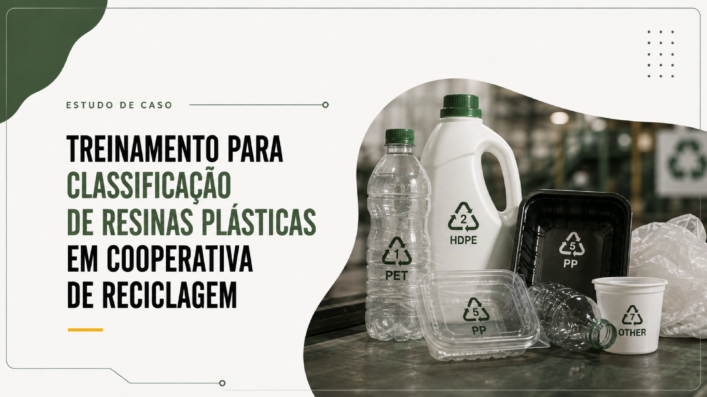

Diagnóstico antes da solução
Compreender a necessidade de aprendizagem, o público e o contexto antes de decidir formato, recurso ou ferramenta.
Sobre mim
Procuro compreender quem precisa aprender, em qual contexto essa aprendizagem acontece e o que precisa ser aplicado depois dela. A partir dessa análise, estruturo conteúdos, estratégias, atividades e recursos de acordo com a necessidade identificada.
Critérios de projeto
Compreender a necessidade de aprendizagem, o público e o contexto antes de decidir formato, recurso ou ferramenta.
Considerar não apenas o que precisa ser apresentado, mas o que o participante deverá compreender, decidir ou conseguir fazer.
Identificar possíveis barreiras de acesso, compreensão e participação ainda durante a estruturação da experiência.
Relacionar conteúdo, hierarquia visual e recursos de forma coerente com o contexto e com as necessidades do público.
Processo
Antes de definir formato, ferramenta ou recurso, procuro compreender a necessidade de aprendizagem, o público e o contexto em que a solução será utilizada.
Identifico quem é o público, qual é a necessidade de aprendizagem e o que precisa ser compreendido ou aplicado.
Observo dificuldades, limitações de acesso e aspectos do contexto que podem interferir na experiência.
Organizo conteúdos, atividades e recursos de acordo com os objetivos definidos e com a realidade do público.
Defino como a jornada será organizada, incluindo interações, feedbacks, navegação e recursos de acessibilidade quando necessários.
Projetos autorais
Projeto conceitual de onboarding para uma empresa do setor têxtil, pensado para um público majoritariamente feminino e com acesso ao treinamento pelo celular. A proposta considera diversidade, inclusão, pertencimento e equilíbrio entre vida pessoal e trabalho.
Trilha mobile first com micromódulos de curta duração, avaliações formativas e recursos de acessibilidade. O treinamento combina onboarding estruturado, ações de reciclagem e conteúdos distribuídos em momentos de menor impacto na rotina produtiva.
Diagnóstico do público, definição da estratégia instrucional, estruturação da jornada, planejamento das interações, desenvolvimento de wireframes, roteiro audiovisual, recursos de acessibilidade e definição de indicadores para validação da solução.

Projeto conceitual baseado em um cenário real de EaD, com foco nas barreiras enfrentadas por estudantes com baixa visão no acesso a materiais, atividades e navegação em ambientes virtuais de aprendizagem.
Redesign da experiência a partir do mapeamento de barreiras em materiais didáticos, atividades online e ambiente virtual, priorizando autonomia, legibilidade, navegação por teclado e compatibilidade com tecnologias assistivas.
Análise das barreiras de acessibilidade, definição das intervenções e redesign da jornada no AVA, considerando conteúdo, navegação, atividades e responsividade.

Projeto conceitual de treinamento operacional criado para reduzir erros na classificação de resinas plásticas e aproximar o conteúdo técnico da rotina de triagem. O case parte de problemas como retrabalho, contaminação dos materiais e perdas operacionais.
Treinamento presencial estruturado em demonstração, prática guiada e feedback imediato, utilizando embalagens reais, recursos visuais e estações de prática para favorecer reconhecimento e tomada de decisão no trabalho.
Diagnóstico do problema de aprendizagem, definição da estratégia instrucional, estruturação da jornada, planejamento dos recursos e definição de indicadores de desempenho. Projeto conceitual, sem implementação em contexto organizacional.
Projeto conceitual voltado à adaptação de profissionais em início de carreira ao trabalho remoto, com foco em organização, comunicação, autonomia e rotina.
Trilha de cinco módulos baseada em situações-problema, tomada de decisão, feedback e reflexão, aproximando a aprendizagem de situações do cotidiano de trabalho. O case também prevê exploração interativa, navegação por teclado e aplicação do aprendizado à própria rotina.
Diagnóstico das barreiras de aprendizagem, definição dos objetivos, arquitetura da trilha, desenho das interações, planejamento da avaliação formativa e especificação de recursos de acessibilidade. Projeto conceitual, sem implementação em contexto organizacional.
Trajetória acadêmica
Centro Universitário Senac
Centro Universitário Ítalo Brasileiro
Senac São Paulo
Contato
Estou disponível para oportunidades relacionadas a Design Instrucional, EaD e desenvolvimento de experiências de aprendizagem.